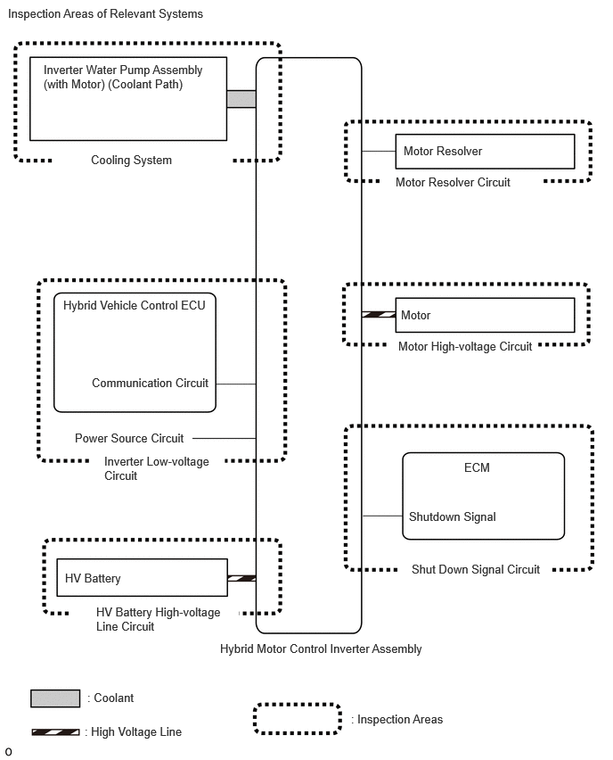

- Open or short circuit in the motor resolver, connectors or cables
| Last Modified: 12-09-2025 | 6.11:8.1.0 | Doc ID: RM100000002K67Q |
| Model Year Start: 2024 | Model: Tacoma HV | Prod Date Range: [03/2024 - ] |
| Title: HYBRID / BATTERY CONTROL: HYBRID CONTROL SYSTEM (w/o 130A Generator): DIAGNOSIS SYSTEM; 2024 - 2026 MY Tacoma HV [03/2024 - ] | ||
DIAGNOSIS SYSTEM
DESCRIPTION
(a) The hybrid vehicle control ECU has a self-diagnosis system. If the computer, Hybrid Control System, or a component is not working properly, the ECU records the conditions that relate to the fault. The ECU also illuminates the master warning in the combination meter assembly and provides other appropriate messages on the multi-information display, such as the HV system warning message, HV battery warning message, or discharge warning message.
- When troubleshooting OBD II (On-Board Diagnostics) vehicles, the GTS (complying with SAE J1978) must be connected to the DLC3 (Data Link Connector 3) of the vehicle. Various data in the vehicle motor generator control ECU can then be read.
-
OBD II regulations require that the vehicle's on-board computer illuminates the MIL (Malfunction Indicator Lamp) on the instrument panel when the computer detects a malfunction in:
- The emission control system components.
- The powertrain control components (which affect vehicle emissions).
-
The computer itself.
In addition, the applicable DTCs prescribed by SAE J2012 are recorded in the motor generator control ECU memory. If the malfunction does not recur in 3 consecutive trips, the MIL turns off automatically but the DTCs remain recorded in the motor generator control ECU memory.
- To check for DTCs, connect the GTS to the DLC3. The GTS displays DTCs, Freeze Frame Data, and a variety of Hybrid Control System data. The DTCs and Freeze Frame Data can be cleared with the GTS. In order to enhance the OBD function on vehicles and develop the off-board diagnosis system, Controller Area Network (CAN) communication is used in this system. CAN is a network which uses a pair of data transmission lines spanning multiple computers and sensors. It allows for high speed communications between the systems and simplification of the wire harness connections.
2 TRIP DETECTION LOGIC
Following is the description for storage of DTC using "2 trip detection logic".
- When a malfunction is first detected, the malfunction is temporarily stored in the hybrid vehicle control ECU memory (1st trip). If the same malfunction is detected during the next drive cycle, the MIL is illuminated (2nd trip).
FREEZE FRAME DATA
- The hybrid vehicle control ECU records vehicle and driving condition information as Freeze Frame Data the moment a DTC is stored. When troubleshooting, Freeze Frame Data can be helpful in determining whether the vehicle was moving or stationary, whether the engine was warmed up or not, as well as other data recorded at the time of a malfunction.
AUXILIARY BATTERY VOLTAGE
Standard Voltage:
|
Switch Condition |
Specified Condition |
|---|---|
|
Ignition switch ON |
11 to 14 V |
-
If voltage is below 11 V, recharge or replace the auxiliary battery.
NOTICE:
-
After the ignition switch is turned off, there may be a waiting time before disconnecting the auxiliary negative (-) battery terminal.
Click here
![2024 - 2026 MY Tacoma Tacoma HV [12/2023 - ]; SETUP: WHEN DISCONNECTING OR RECONNECTING BATTERY TERMINAL: BEFORE DISCONNECTING BATTERY](../../../../stylegraphics/info.gif)
-
When disconnecting and reconnecting the auxiliary battery
HINT:
When disconnecting and reconnecting the auxiliary battery, there is an automatic learning function that completes learning when the respective system is used.
Click here
-
After the ignition switch is turned off, there may be a waiting time before disconnecting the auxiliary negative (-) battery terminal.
MIL (Malfunction Indicator Lamp)
(a) The MIL is illuminated when the ignition switch is first turned to ON, before the READY light comes on.
(b) When the READY indicator turns on, the MIL should turn off. If the MIL remains illuminated, the diagnosis system has detected a malfunction or abnormality in the system.
HINT:
If the MIL is not illuminated when the ignition switch is first turned to ON, check the MIL circuit.
for SFI System: Click here
RELEVANT SYSTEMS CHECK
The inspection areas and outline of the inspection for each circuit are listed below.
Inspection Details of Relevant Systems
|
System to be Inspected |
Malfunction Possibility |
Inspection Content |
|---|---|---|
|
Motor Resolver Circuit |
Motor resolver signal |
|
|
Motor High-voltage Circuit |
Motor output |
|
|
Inverter Low-voltage Circuit |
Power supply voltage from +B or communication between hybrid vehicle control ECU and motor generator control ECU (MG ECU) |
|
|
HV Battery High-voltage Line Circuit |
High voltage power supply from HV battery |
|
|
Cooling System |
Temperature abnormally high |
|
|
Shutdown Signal Circuit |
Shutdown signal |
|
|
|
|